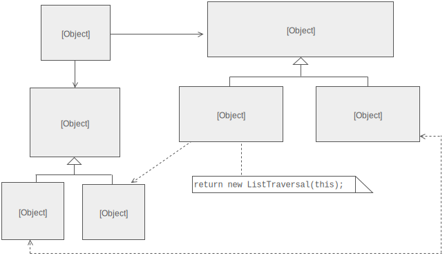
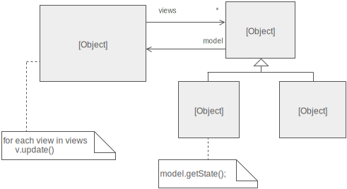

Introducción a la
Programación Reactiva
@tiagox
¡Hola que tal!
Soy @tiagox
Code Inquisitor
at
Ranter
at
Me quejo de (casi) todo
¿Qué es la Programación Reactiva?
The Reactive Manifesto *
- Reaccionar a eventos => Event Driven
- Reaccionar a cargas => Elastic
- Reaccionar a las fallas => Resilient
- Reaccionar al usuario => Responsive
¿Qué es la Programación Reactiva?
- Es un paradigma de programación
- Todos los datos son de naturaleza asíncrona
- Los cambios se propagan en forma de flujos de datos (streams)

¿Qué es la Programación Reactiva?
- Es un paradigma de programación
- Todos los datos son de naturaleza asíncrona
- Los cambios se propagan en forma de flujos de datos (streams)
¿Cómo se llega a todo esto?
Iterator Pattern
Iterator Pattern
Implementado por las colecciones
Iterator Pattern
Habilita el consumo de todos los elementos de forma progresiva
Iterator Pattern
El consumo es de un elemento a la vez
Iterator Pattern
Productor ⇽ Consumidor
Iterator Pattern
El Consumidor tiene el control
Iterator Pattern
Frente a un pedido del Consumidor el Productor puede:
- Retornar el siguiente elemento
- Informar que no hay más elementos
- (Rara vez) Lanzar un error
Observer Pattern
Observer Pattern
Es la base de la programación orientada a eventos
Observer Pattern
Permite informar a los suscriptores sobre cambios
Observer Pattern
Publisher ⇾ Subscriber
Observer Pattern
Productor ⇾ Consumidor
Observer Pattern
En este caso es el Productor el que tiene el control
Observer Pattern
En el caso de no querer recibir más datos, el Consumidor debe explícitamente desuscribirse
Observer Pattern
Hay 2 aspectos que se dejaron de lado:
- No hay forma de informar que no hay más eventos
- No contempla el informe de errores
Observer Pattern
Hay 2 aspectos que se dejaron de lado:
- No hay forma de informar que no hay más datos
- No contempla el informe de errores
Observer Pattern
Una solución sería, registrar 3 callbacks:
- El que recibe un dato
- Uno que trate los errores
- Y otro que se invoque cuando no haya más datos
Iterator ~ Observer
Observable
Streams
Colecciones + Tiempo
Colecciones
{1, 2, 3, 4, 5, 6, 7, 8}Puedo solicitar los datos cuando yo lo decido
Colecciones + Tiempo
{…1……2…3………………4…5…6………7………8}Los datos me llegan asincrónicamente
… no se almacenan
… tengo que procesarlos a medida que llegan
ReactiveX
Languages
- Java: RxJava
- JavaScript: RxJS
- C#: Rx.NET
- C#(Unity): UniRx
- Scala: RxScala
- Clojure: RxClojure
- C++: RxCpp
- Lua: RxLua
- Ruby: Rx.rb
- Python: RxPY
- Go: RxGo
- Groovy: RxGroovy
- JRuby: RxJRuby
- Kotlin: RxKotlin
- Swift: RxSwift
- PHP: RxPHP
- Elixir: reaxive
- Dart: RxDart
ReactiveX for platforms and frameworks
- RxNetty
- RxAndroid
- RxCocoa
The Observer pattern done right
ReactiveX is a combination of the best ideas from the Observer pattern, the Iterator pattern, and functional programming
¿Programación Funcional?
Si
Otro paradigma
Si
Pero, ¿qué nos importa de la Programación Funcional?
Evitar side effects
¿Cómo?
Creando Funciones Puras
¿Para qué?
Definición *
A pure function is a function where the return value is only determined by its input values, without observable side effects.
Colecciones
Para trabajar con Colecciones tenemos:
forEachmapfilterreduceflatten- ...
forEach
[1, 2, 3, 4, 5].forEach(x => {
console.log(x)
})
> 1
> 2
> 3
> 4
> 5
map
[1, 2, 3, 4, 5].map(x => x * 2)
> [2, 4, 6, 8, 10]
filter
[1, 2, 3, 4, 5].filter(x => x % 2 !== 0)
> [1, 3, 5]
flatten
[[1], [], [2, 3], [4, 5]].flatten()
> [1, 2, 3, 4, 5]
Streams
map
|---1------2---3------------4---5--->map(x => x * 2)|---2------4---6------------8---10-->
filter
|---1------2---3------------4---5--->filter(x => x % 2 !== 0)|---1----------3----------------5--->
flatten
|---1| |-------2--------------3| |------| |-----------4------5|flatten()|---1---2--------------3---4---5|
takeUntil
|---1------2---3-------------4---5---> |---------------------A---> otherStreamtakeUntil(otherStream)|---1------2---3------|
Todo muy lindo, pero…
¿De dónde saco un stream?
Hay que modelarlo
¿Qué puedo modelar?
- Eventos
- Peticiones de datos
- Animaciones
Todo es un stream
¿Cómo puedo modelar un stream?
Rx.Observable.create(observer => {
// …
observer.onNext(data)
// …
observer.onError(error)
// …
observer.onCompleted()
})
Rx.Observable.create(observer => {
let counter = 0
const interval = setInterval(() => {
if (counter < 10) {
observer.onNext(counter)
counter++
} else {
clearInterval(interval)
observer.onCompleted()
}
}, 1000)
})
Rx.Observable.from([0, 1, 2, 3, 4, 5, 6, 7, 8, 9])
Rx.Observable.fromPromise(fetch(requestUrl))
Rx.Observable.fromEvent(saveButton, 'click')
Ejemplos
Detectando doble-clicks
Implementando drag & drop
getElementDrags = (element) =>
element.mouseDowns
.map(mouseDown =>
document.mouseMoves.takeUntil(document.mouseUps))
.flatten()
getElementDrags(image).forEach(position => {
image.position = position
})
element.mouseDowns
|---MD-------------------------------------------------------->
document.mouseMoves
|------MM---MM---MM------MM------MM---MM---MM---MM------MM---->
document.mouseUps
|-----------------------------------------MU------------------>
mouseDowns.map(`take mouseMoves until mouseUp`)
|------------------------------------------------------------->
+---MM---MM---MM------MM------MM---MM-| ← Meta Stream
flatten()
|-------MM---MM---MM------MM------MM---MM--------------------->
Buscador con sugerencias
searchResultSets = keyPresses
.throttle(250)
.map(key =>
getJSON('/search?q=' + input.value)
.takeUntil(keyPresses))
.flatten()
searchResultSets.forEach(
result => { updateSearchResults(result) }
error => { showError('Server down') }
})
~ fin ~